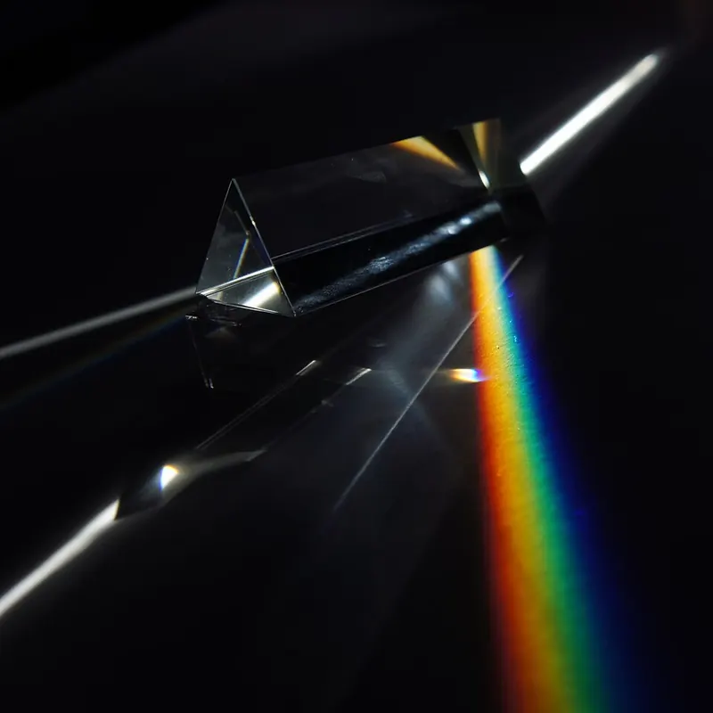
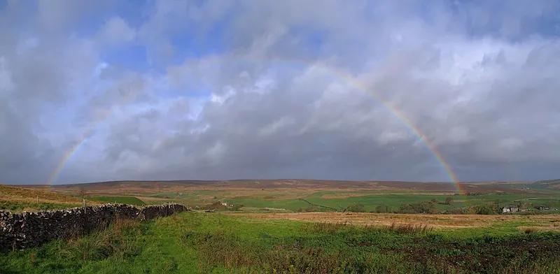

Cambridge Lower Secondary · Science 0893 · Stage 8 · Physics
Dispersion and Colour
How a prism shows that white light is a mixture of colours, and how colours of light are added, subtracted by filters, absorbed and reflected to give objects their colour.
British & IGCSE › Checkpoint 8 › Checkpoint 8 Science — Complete Course
- Know that white light is a mixture of many colours, and that this can be shown by passing white light through a prism (dispersion). (8Ps.03)
- Describe how colours of light can be added (mixed), subtracted (by filters), absorbed and reflected — and use this to explain the colours of objects and filters. (8Ps.04)
- Thinking and Working Scientifically used on this page: making predictions from scientific knowledge (8TWSp.03) and presenting observations in tables (8TWSa.05).
1. Key words
| Word / phrase | Meaning / use |
|---|---|
| white light | الضوء الأبيض — light from the Sun or a lamp; a mixture of all the colours of the spectrum |
| prism | منشور — a triangular block of glass or clear plastic |
| dispersion | التشتت (تحليل الضوء) — splitting white light into its separate colours |
| spectrum | الطيف — the band of colours made by dispersion: red, orange, yellow, green, blue, indigo, violet |
| primary colours of light | الألوان الأساسية للضوء — red, green and blue |
| secondary colours of light | الألوان الثانوية للضوء — yellow, cyan and magenta, each made by adding two primary colours |
| filter | مُرشِّح (فلتر) — a coloured transparent sheet that lets only some colours through |
| transmit | يُنفِذ — let light pass through |
| absorb | يمتص — take in light (the light energy usually warms the material) |
| reflect | يعكس — bounce light off a surface |
2. White light is a mixture of colours
Light from the Sun or a bright lamp looks white, but it is really a mixture of many colours. You can show this with a glass prism: shine a narrow beam of white light into one side and a band of colours comes out of the other side. This splitting of white light into colours is called dispersion, and the band of colours is called a spectrum.

The colours always appear in the same order: red, orange, yellow, green, blue, indigo, violet. A memory sentence: Richard Of York Gave Battle In Vain (ROYGBIV). The colours blend smoothly into one another — the spectrum is continuous, and the seven names are just the main colours we name.
3. Why does a prism split white light?
You learned in the reflection and refraction lesson that light slows down when it enters glass, and bends towards the normal. The key extra fact is that each colour slows down by a different amount in glass:
- Violet light slows down the most, so it is refracted (bent) the most.
- Red light slows down the least, so it is refracted the least.
- All the other colours are in between, so they spread out in order. The light is refracted at both faces of the prism, and because the faces are not parallel the colours spread out even more as they leave.
In a rectangular glass block the two faces are parallel, so the colours bend back the way they came and come out almost on top of each other — that is why you do not usually see a spectrum from a window.
4. Evidence: the colours come from the white light, not the prism
Someone might suggest that the prism adds colour to the light, like a coloured filter. Isaac Newton tested this idea with two prisms:
- A first prism splits white light into a spectrum.
- Newton let only one colour (for example red) pass through a slit into a second prism. The red light was bent again but stayed red — the prism did not change its colour, so the prism does not make colours.
- Then he placed a second prism upside down in the path of the whole spectrum. The colours were bent back together and white light came out.
- Conclusion: the colours were in the white light all along. The prism only separates them (and a second prism can recombine them).
This is a good example of how evidence can support one idea (white light is a mixture) and contradict another (the prism adds colour).
A rainbow is dispersion in nature. Sunlight enters raindrops, is refracted, reflects off the back of the drop and is refracted again as it leaves. Each colour is bent by a different amount, so you see a spectrum. You can only see a rainbow when the Sun is behind you and the rain is in front of you.

5. Adding colours of light
The primary colours of light are red, green and blue. By mixing (adding) these three in different amounts, you can make light of any colour. Screens on phones, laptops and TVs work this way: every pixel is made of tiny red, green and blue parts.
| Colours of light added | Result |
|---|---|
| red + green | yellow |
| red + blue | magenta (pinkish-purple) |
| green + blue | cyan (light blue-green) |
| red + green + blue | white |
Yellow, magenta and cyan are the secondary colours of light. Notice that adding a secondary colour to the primary colour it is missing also gives white: yellow + blue = white, cyan + red = white, magenta + green = white.
Mixing paints is different from mixing lights. Red paint and green paint mixed give a muddy brown, not yellow, because paints absorb colours (each paint takes away some colours, so the mixture reflects less light). With lights, colours are added, so the mixture gets brighter. In Checkpoint questions about light, never use paint rules.
6. Subtracting colours: filters
A coloured filter is a transparent sheet that transmits (lets through) only its own colour and absorbs all the other colours. It subtracts colours from white light — it cannot add any colour that was not already there.
| Filter | Transmits | Absorbs |
|---|---|---|
| red | red | green, blue (and everything except red) |
| green | green | red, blue |
| blue | blue | red, green |
| yellow | red and green (so it looks yellow) | blue |
| cyan | green and blue | red |
| magenta | red and blue | green |
Two filters: work step by step. The first filter decides what reaches the second filter. The second filter can only let through colours that are in that light and that it transmits. For example: white light → yellow filter → red and green come out → green filter → only green comes out.
7. Why objects have colour: reflecting and absorbing
Most objects do not make their own light. We see them because they reflect light into our eyes. The colour of an opaque object depends on which colours it reflects and which colours it absorbs:
- A red object reflects red light and absorbs the other colours.
- A white object reflects all colours.
- A black object absorbs all colours and reflects none (that is why black things get hot in sunlight).
- A yellow object reflects red and green (and yellow) and absorbs blue; a cyan object reflects green and blue; a magenta object reflects red and blue.
Coloured light on coloured objects. An object can only reflect colours that are in the light shining on it. Use this method:
- Write down which colours are in the light (white = red + green + blue).
- Write down which colours the object can reflect.
- The object looks the colour of what is in both lists. If nothing is in both, it looks black.
| Object colour | in white light | in red light | in green light | in blue light |
|---|---|---|---|---|
| white | white | red | green | blue |
| red | red | red | black | black |
| green | green | black | green | black |
| blue | blue | black | black | blue |
| yellow (reflects red + green) | yellow | red | green | black |
| cyan (reflects green + blue) | cyan | black | green | blue |
| black | black | black | black | black |
- الضوء الأبيض = خليط من كل الألوان. المنشور بيفصلها (تشتت) وهو مش بيضيف ألوان.
- البنفسجي بينكسر أكتر حاجة، والأحمر أقل حاجة.
- جمع ضوء: أحمر + أخضر = أصفر، أحمر + أزرق = أرجواني (magenta)، أخضر + أزرق = سماوي (cyan)، والتلاتة = أبيض.
- الفلتر بيعدّي لونه بس ويمتص الباقي.
- الجسم بيعكس لونه ويمتص الباقي — ولو اللون ده مش موجود في الضوء اللي نازل عليه يبان أسود.
8. Worked examples
Worked example 1 — Describe how you could show that white light is made of different colours. [2]
- Shine a narrow beam of white light (from a ray box) into a glass prism (1).
- A spectrum of colours (red to violet) appears on a white screen on the other side — the white light has been dispersed into its colours (1).
- Common mistake: writing only "use a prism". Say what you do and what you observe.
Worked example 2 — In the spectrum from a prism, which colour is refracted most? Explain why. [2]
- Violet (1).
- Violet light slows down the most when it enters the glass, so it changes direction the most (1).
Worked example 3 — A red spotlight and a green spotlight shine on the same part of a white wall. (a) What colour does the wall look where they overlap? [1] (b) A blue spotlight is added to the same place. What colour is it now? [1]
- (a) red + green = yellow.
- (b) red + green + blue = white.
- Common mistake: answering "brown" — that is mixing paint, not light.
Worked example 4 — White light passes through a magenta filter and then through a blue filter. What colour comes out? Explain. [2]
- The magenta filter transmits red and blue and absorbs green (1).
- The blue filter transmits blue and absorbs red, so only blue light comes out (1).
Worked example 5 — A footballer's kit has a yellow shirt and blue shorts. On a dark evening the pitch is lit only by red light. Predict the colour of the shirt and shorts. Explain. [3]
- Shirt looks red: yellow cloth reflects red and green; only red light is present, so it reflects red (1).
- Shorts look black: blue cloth reflects only blue; there is no blue in red light, so it absorbs all the light (1).
- Correct reasoning using reflect / absorb for both (1).
Worked example 6 — A girl says, "The prism adds the colours to the light, like a filter." Describe an experiment that shows she is wrong. [2]
- Use a second prism, turned the other way, in the path of the spectrum from the first prism (1).
- The colours recombine to make white light again, which shows the colours were already in the white light — the prism only separates them (1). (Accept: pass one colour through a second prism — it stays the same colour.)
- Saying the prism makes or adds the colours. It separates colours that are already in white light.
- Getting the order of the spectrum wrong, or saying red is bent most. Violet is bent most, red least.
- Using paint rules for light (red + green light is yellow, not brown).
- Saying a red filter "turns light red". It absorbs the other colours and transmits red.
- Saying a red object "absorbs red". It reflects red and absorbs the other colours.
- Forgetting that an object can only reflect colours that are in the light shining on it — otherwise it looks black.
- Writing "cyan" or "magenta" as "light blue" or "pink" when the question asks for the name of the colour. Learn the proper names.
- Label the colours of the spectrum on a prism diagram, or say which colour is bent most / least.
- Complete a colour-addition diagram of three overlapping circles of red, green and blue light.
- Predict what colour comes through one or two filters, or what colour an object looks in coloured light — then explain using the words *transmit*, *absorb* and *reflect*.
- Complete a table of object colours under different coloured lights.
- Describe an experiment with a prism (what you do, what you see), or evaluate a student's claim using evidence.
- Exam technique: in an explanation, say which colours are absorbed and which are reflected/transmitted — one mark is often for each idea.
Practice
- White light is a mixture of colours. A prism disperses it into a spectrum: red, orange, yellow, green, blue, indigo, violet.
- Each colour slows down by a different amount in glass: violet is refracted most, red least.
- Primary colours of light: red, green, blue. Red + green = yellow, red + blue = magenta, green + blue = cyan, all three = white.
- A filter transmits its own colour(s) and absorbs the rest — it subtracts colours.
- An object reflects its own colour(s) and absorbs the rest. White reflects all; black absorbs all.
- An object can only reflect colours that are in the light shining on it; if there are none, it looks black.
All pages in this course
Start here
- Stage 8 Science: The Tests and How to Prepare
- Thinking and Working Scientifically: Models, Investigations and Analysing Results
Biology
- Joints and Antagonistic Muscles
- Blood and Its Components
- Breathing, Gas Exchange and Diffusion in the Lungs
- A Balanced Diet, Energy Stores and Lifestyle
- Aerobic Respiration
- Ecosystems, Bioaccumulation and Invasive Species
Chemistry
- The Structure of the Atom
- Purity, Concentration and Chromatography
- Word Equations, Exothermic and Endothermic Reactions
- The Reactivity of Metals
- Impure Products and Solubility of Salts
Physics
- Speed and Distance–Time Graphs
- Balanced and Unbalanced Forces, and Moments
- Pressure, Particles and Diffusion
- Reflection and Refraction
- Dispersion and Colour
- Magnetic Fields and Electromagnets
Earth and space
- The Earth's Magnetic Field and Earth's Resources
- Climate, Weather and Climate Change
- Galaxies and Asteroids
Practice tests